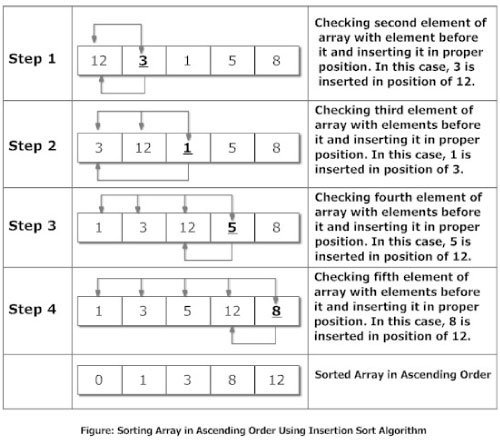

Animation
Animation
Algorithm

Explanation:
Suppose, you want to sort elements in ascending as in above figure. Then,
Step 1: The second element of an array is compared with the elements that appears before it (only first element in this case). If the second element is smaller than first element, second element is inserted in the position of first element. After first step, first two elements of an array will be sorted.
Step 2: The third element of an array is compared with the elements that appears before it (first and second element). If third element is smaller than first element, it is inserted in the position of first element. If third element is larger than first element but, smaller than second element, it is inserted in the position of second element. If third element is larger than both the elements, it is kept in the position as it is. After second step, first three elements of an array will be sorted.
Step 3: Similary, the fourth element of an array is compared with the elements that appears before it (first, second and third element) and the same procedure is applied and that element is inserted in the proper position. After third step, first four elements of an array will be sorted.
If there are n elements to be sorted. Then, this procedure is repeated n-1 times to get sorted list of array.
Source Code
#include<stdio.h>
int main()
{
int n,i,j,key;
printf("enter the sizeof array");
scanf("%d",&n);
int a[n];
printf("enter the array");
for(i=0;i<n;i++)
{
scanf("%d",&a[i]);
}
//algo for insertion sort
for(j=1;j<n;j++)
{
key=a[j];
i=j-1;
while(key<a[i]&&i>=0)
{
a[i+1]=a[i];
i=i-1;
}
a[i+1]=key;
}
printf("\nthe sorted array in increasing order is\n ");
for(i=0;i<n;i++)
{
printf("\nthe %d element is %d",i+1,a[i]);
}
return(0);
}